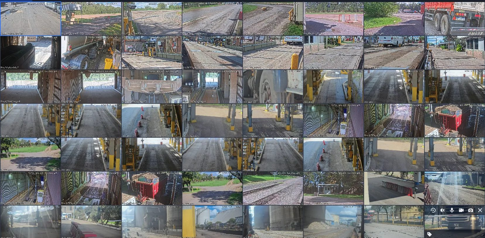
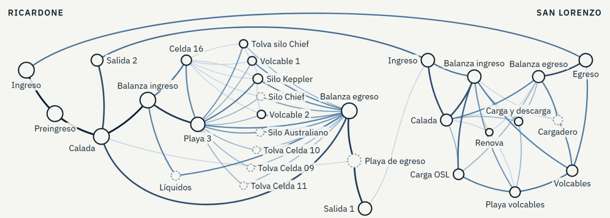

<meta charset="utf-8">
<title>Reunión Nodo Sur</title>
<link rel="preconnect" href="https://fonts.googleapis.com">
<link rel="stylesheet" href="https://fonts.googleapis.com/css2?family=Plus+Jakarta+Sans:wght@400;500;600;700;800&family=IBM+Plex+Mono:wght@500;600&display=swap">
<style>
/* Layout: láminas 16:9 apiladas, cada una escalada al ancho disponible. Paleta fija del deck (verde NVA + violeta), un solo tema. */
:root{--ground:#DCD9CE;--ink:#17302A;--line:#C9C5B8;color-scheme:light}
html,body{background:var(--ground);color:var(--ink)}
body{font-family:'Plus Jakarta Sans',Arial,sans-serif;padding-inline:16px;padding-block:24px 48px}
.deck{max-width:1280px;margin-inline:auto;display:flex;flex-direction:column;gap:24px}
.frame{position:relative;width:100%;aspect-ratio:16/9;overflow:hidden;border-radius:8px;box-shadow:0 2px 10px rgba(23,48,42,.18);max-width:100%}
.frame>section{position:absolute;left:0;top:0;width:1920px;height:1080px;box-sizing:border-box;transform-origin:0 0;transform:scale(var(--k,.5))}
.frame *{box-sizing:border-box;margin:0}
.frame table{border-collapse:collapse}
.frame th,.frame td{padding:16px 20px;text-align:left;vertical-align:top;line-height:1.35;border-bottom:1px solid var(--line)}
.frame th{font-weight:700}
</style>
<main class="deck">
<div class="frame" aria-label="Lámina 1"><section style="background:#0B5638;color:#F1F6F2;font-family:'Plus Jakarta Sans', Arial, sans-serif;padding:112px 128px 160px;display:flex;flex-direction:column;gap:28px">

<div style="position:absolute;left:0;top:0;width:1920px;height:1080px;background:linear-gradient(120deg, rgba(11,86,56,0.90) 0%, rgba(14,74,51,0.78) 55%, rgba(46,27,78,0.82) 100%)"></div>


<div style="flex:1"></div>
<div style="position:relative;display:flex;flex-direction:column;gap:28px">
<h1 style="font-size:120px;font-weight:800;line-height:1.05;width:1550px;color:#FFFFFF">Alineamiento Proyecto Cámaras</h1>
<p style="font-size:56px;font-weight:700;line-height:1.1;color:#C9E3D3">Próximos pasos</p>
<div style="width:160px;height:8px;background:#9CCBAE;border-radius:4px"></div>
<p style="font-size:40px;line-height:1.3;color:#D6E4DA">Nodo Sur · 14 de octubre de 2026</p>
</div>
</section></div>
<div class="frame" aria-label="Lámina 2"><section style="background:#143D2E;color:#F5F4EE;font-family:'Plus Jakarta Sans', Arial, sans-serif;padding:112px 128px 160px;display:flex;flex-direction:column;gap:64px">
<div style="position:absolute;left:128px;top:72px;width:48px;height:8px;background:#3FA06E;border-radius:4px"></div><div style="position:absolute;left:184px;top:72px;width:24px;height:8px;background:#A48AD8;border-radius:4px"></div><div style="display:flex;flex-direction:column;gap:16px"><p style="font-size:24px;font-weight:700;letter-spacing:3px;text-transform:uppercase;color:#D9A441">Resultados de los comités</p><h2 style="font-size:56px;font-weight:800;line-height:1.12;width:1664px">24 informes en 18 semanas, cada uno con datos de toda la planta</h2></div>
<div style="display:flex;gap:64px;align-items:stretch">
<div style="flex:1;display:flex;flex-direction:column;gap:28px;justify-content:center">
<p style="font-size:24px;font-weight:700;letter-spacing:2px;color:#C9B6EE">LO QUE MOSTRARON LOS DATOS · LA SOJA, DESDE MAYO</p>
<div style="display:flex;gap:28px"><div style="flex:1;display:flex;flex-direction:column;gap:6px"><p style="font-size:96px;font-weight:800;line-height:1">66 %</p><p style="font-size:26px;line-height:1.3;color:#CFE0D7">de las toneladas fueron soja: 1,6 millones</p></div><div style="flex:1;display:flex;flex-direction:column;gap:6px"><p style="font-size:96px;font-weight:800;line-height:1">6,5 h</p><p style="font-size:26px;line-height:1.3;color:#CFE0D7">tarda un camión de soja desde que entra a Ricardone hasta que sale del puerto</p></div><div style="flex:1;display:flex;flex-direction:column;gap:6px"><p style="font-size:96px;font-weight:800;line-height:1">42 min</p><p style="font-size:26px;line-height:1.3;color:#CFE0D7">en movimiento: el resto es espera</p></div></div>
<div style="display:flex;width:1060px;height:100px;border-radius:10px;overflow:hidden"><div style="width:41%;background:#D9A441;display:flex;flex-direction:column;justify-content:center;padding:0 16px"><p style="font-size:24px;font-weight:800;color:#17302A">Espera para calar en Ricardone</p><p style="font-size:24px;color:#17302A">2,7 h · 41 %</p></div><div style="width:48%;background:#E3B95E;display:flex;flex-direction:column;justify-content:center;padding:0 16px;border-left:3px solid #143D2E"><p style="font-size:24px;font-weight:800;color:#17302A">Espera en el puerto hasta descargar</p><p style="font-size:24px;color:#17302A">3,1 h · 48 %</p></div><div style="width:11%;background:#3FA06E;display:flex;flex-direction:column;justify-content:center;align-items:center;padding:0 6px"><p style="font-size:24px;font-weight:800;color:#0F2A20">0,7 h</p><p style="font-size:24px;color:#0F2A20">11 %</p></div></div>
<p style="font-size:24px;line-height:1.4;color:#CFE0D7">En verde, el tiempo en movimiento · 41.489 camiones de soja al puerto desde el 15 de mayo. <b style="color:#EEF3EF">De cada 10 horas, el camión pasa casi 9 esperando.</b></p>
</div>
<div style="width:440px;display:flex;flex-direction:column;gap:36px;justify-content:center">
<div style="display:flex;flex-direction:column;gap:6px;border-left:6px solid #A48AD8;padding-left:24px"><p style="font-size:80px;font-weight:800;line-height:1">2,4 M</p><p style="font-size:28px;line-height:1.3;color:#CFE0D7">toneladas analizadas en 79.484 movimientos</p></div>
<div style="display:flex;flex-direction:column;gap:6px;border-left:6px solid #A48AD8;padding-left:24px"><p style="font-size:80px;font-weight:800;line-height:1">3.100 t</p><p style="font-size:28px;line-height:1.3;color:#CFE0D7">en 92 recorridos anómalos detectados, a 34 t por camión</p></div>
</div>
</div>
<div style="display:flex;gap:16px;align-items:center;flex-wrap:wrap">
<p style="font-size:24px;font-weight:700;letter-spacing:2px;color:#C9B6EE;padding-right:8px">PARTICIPARON</p><p style="font-size:26px;color:#EEF3EF;background:#1E4D3B;border:1px solid #3FA06E;border-radius:999px;padding:8px 22px">Gerentes generales</p><p style="font-size:26px;color:#EEF3EF;background:#1E4D3B;border:1px solid #3FA06E;border-radius:999px;padding:8px 22px">Gerentes de planta</p><p style="font-size:26px;color:#EEF3EF;background:#1E4D3B;border:1px solid #3FA06E;border-radius:999px;padding:8px 22px">Calada</p><p style="font-size:26px;color:#EEF3EF;background:#1E4D3B;border:1px solid #3FA06E;border-radius:999px;padding:8px 22px">Movimientos internos</p><p style="font-size:26px;color:#EEF3EF;background:#1E4D3B;border:1px solid #3FA06E;border-radius:999px;padding:8px 22px">Coordinación de playa</p>
</div>
<p style="position:absolute;left:128px;bottom:64px;width:1664px;font-size:24px;color:#BCD3C7"><b style="color:#C9B6EE">NODO SUR</b> · 2</p>
</section></div>
<div class="frame" aria-label="Lámina 3"><section style="background:#F5F4EE;color:#17302A;font-family:'Plus Jakarta Sans', Arial, sans-serif;padding:112px 128px 160px;display:flex;flex-direction:column;gap:36px">
<div style="position:absolute;left:128px;top:72px;width:48px;height:8px;background:#1F6E4A;border-radius:4px"></div><div style="position:absolute;left:184px;top:72px;width:24px;height:8px;background:#6B46A8;border-radius:4px"></div><div style="display:flex;flex-direction:column;gap:16px"><p style="font-size:24px;font-weight:700;letter-spacing:3px;text-transform:uppercase;color:#1F6E4A">Resultados de los comités · Logística</p><h2 style="font-size:56px;font-weight:800;line-height:1.12;width:1664px">Logística: qué encontramos y qué se decidió</h2></div>
<table style="font-size:28px;width:1664px">
<tr style="background:#143D2E"><th style="width:42%;color:#EEF3EF">Qué encontramos</th><th style="width:42%;color:#EEF3EF">Qué se decidió</th><th style="width:16%;color:#EEF3EF">Estado</th></tr>
<tr style=""><td style="line-height:1.4">La mayoría de los camiones llegaba de noche y se acumulaba en el ingreso.</td><td style="line-height:1.4">Abrir el cupo cada 2 horas, repartido a lo largo del día.</td><td style="font-weight:700;color:#1F6E4A">● Hecho</td></tr><tr style="background:#EAE8DF;"><td style="line-height:1.4">La flota de transiles está sobredimensionada y el circuito no es fluido.</td><td style="line-height:1.4">Mejorar el flujo y bajar lo que se paga por tonelada movida: el camionero lo compensa con más viajes.</td><td style="font-weight:700;color:#A3701A">● En evaluación</td></tr><tr style=""><td style="line-height:1.4">Medimos cuánto tarda cada tramo de cada circuito, camión por camión.</td><td style="line-height:1.4">Informe semanal de tiempos por tramo en el comité.</td><td style="font-weight:700;color:#2E6DA4">● Monitoreo</td></tr><tr style="background:#EAE8DF;"><td style="line-height:1.4">Las esperas largas se concentran en Playa 3 y Calada, según la franja del día.</td><td style="line-height:1.4">Seguir las esperas por franja y por punto.</td><td style="font-weight:700;color:#2E6DA4">● Monitoreo</td></tr><tr style=""><td style="line-height:1.4">Medimos la actividad de cada sector: caladas, volcables, balanzas y silos, por hora y por día.</td><td style="line-height:1.4">Informe semanal de actividad por sector para ordenar personal y turnos.</td><td style="font-weight:700;color:#2E6DA4">● Monitoreo</td></tr>
</table>
<p style="position:absolute;left:128px;bottom:64px;width:1664px;font-size:24px;color:#5F6B66"><b style="color:#6B46A8">NODO SUR</b> · 3</p>
</section></div>
<div class="frame" aria-label="Lámina 4"><section style="background:#F5F4EE;color:#17302A;font-family:'Plus Jakarta Sans', Arial, sans-serif;padding:112px 128px 160px;display:flex;flex-direction:column;gap:36px">
<div style="position:absolute;left:128px;top:72px;width:48px;height:8px;background:#1F6E4A;border-radius:4px"></div><div style="position:absolute;left:184px;top:72px;width:24px;height:8px;background:#6B46A8;border-radius:4px"></div><div style="display:flex;flex-direction:column;gap:16px"><p style="font-size:24px;font-weight:700;letter-spacing:3px;text-transform:uppercase;color:#1F6E4A">Resultados de los comités · Seguridad</p><h2 style="font-size:56px;font-weight:800;line-height:1.12;width:1664px">Seguridad: qué encontramos y qué se decidió</h2></div>
<table style="font-size:28px;width:1664px">
<tr style="background:#143D2E"><th style="width:42%;color:#EEF3EF">Qué encontramos</th><th style="width:42%;color:#EEF3EF">Qué se decidió</th><th style="width:16%;color:#EEF3EF">Estado</th></tr>
<tr style=""><td style="line-height:1.4">Camiones con doble registro de ingreso: iban al puerto y, a pedido del entregador, volvían a Ricardone a recalar.</td><td style="line-height:1.4">Una vez que salen de Ricardone, el entregador ya no puede trabar la descarga en el puerto.</td><td style="font-weight:700;color:#1F6E4A">● Hecho</td></tr><tr style="background:#EAE8DF;"><td style="line-height:1.4">Se permite un excedente de 500 kg; muchos camiones vuelven con 550 kg y tienen que rehacer todo el circuito desde cero.</td><td style="line-height:1.4">Ampliar la tolerancia para que no reinicien el circuito.</td><td style="font-weight:700;color:#A3701A">● En evaluación</td></tr><tr style=""><td style="line-height:1.4">Camiones que tardan más de 30 minutos entre Ricardone y San Lorenzo y después no pasan por calada.</td><td style="line-height:1.4">Se registran los casos y se controla que se cumpla la regla.</td><td style="font-weight:700;color:#6B46A8">● Control</td></tr>
</table>
<p style="position:absolute;left:128px;bottom:64px;width:1664px;font-size:24px;color:#5F6B66"><b style="color:#6B46A8">NODO SUR</b> · 4</p>
</section></div>
<div class="frame" aria-label="Lámina 5"><section style="background:#F5F4EE;color:#17302A;font-family:'Plus Jakarta Sans', Arial, sans-serif;padding:112px 128px 160px;display:flex;flex-direction:column;gap:32px">
<div style="position:absolute;left:128px;top:72px;width:48px;height:8px;background:#1F6E4A;border-radius:4px"></div><div style="position:absolute;left:184px;top:72px;width:24px;height:8px;background:#6B46A8;border-radius:4px"></div><div style="display:flex;flex-direction:column;gap:16px"><p style="font-size:24px;font-weight:700;letter-spacing:3px;text-transform:uppercase;color:#1F6E4A">Resultados de los comités · Lo que vale</p><h2 style="font-size:56px;font-weight:800;line-height:1.12;width:1664px">Logística: lo que pagamos de transile y lo que se puede bajar</h2></div>
<table style="font-size:26px;width:1664px">
<tr style="background:#143D2E"><th style="width:36%;color:#EEF3EF">Qué encontramos</th><th style="width:40%;color:#EEF3EF">Cómo se calcula</th><th style="width:24%;color:#EEF3EF">Valor</th></tr>
<tr style=""><td style="line-height:1.35">Transile de Ricardone al puerto desde mayo: 4.874 viajes, 132.000 t de pellet y soja</td><td style="line-height:1.35;color:#4A5A53">132.000 t × $ 6.000 por tonelada de flete</td><td style="line-height:1.25;font-weight:800;color:#1F6E4A;font-size:32px">$ 794 M pagados</td></tr><tr style="background:#EAE8DF;"><td style="line-height:1.35">El camión hace 2 viajes por día; con el circuito fluido hace 3 a 4 y el flete baja a $ 5.000 por tonelada</td><td style="line-height:1.35;color:#4A5A53">132.000 t × $ 1.000 menos por tonelada</td><td style="line-height:1.25;font-weight:800;color:#1F6E4A;font-size:32px">$ 132 M menos<br><span style="font-size:24px;font-weight:600;color:#A3701A">todavía no se bajó</span></td></tr><tr style=""><td style="line-height:1.35">Celda 16: 100.000 t por mover al puerto</td><td style="line-height:1.35;color:#4A5A53">3.333 viajes: $ 600 M a la tarifa de hoy, $ 500 M con el circuito fluido y la mitad de los camiones</td><td style="line-height:1.25;font-weight:800;color:#1F6E4A;font-size:32px">$ 100 M menos</td></tr>
</table>
<p style="font-size:24px;line-height:1.4;color:#5F6B66">Flete del transile: $ 180.000 por viaje de 30 t = $ 6.000 por tonelada (comité de octubre). Viajes y toneladas: Excel de movimientos, egresos de Ricardone al puerto, del 15/05 al 13/10.</p>
<p style="position:absolute;left:128px;bottom:64px;width:1664px;font-size:24px;color:#5F6B66"><b style="color:#6B46A8">NODO SUR</b> · 5</p>
</section></div>
<div class="frame" aria-label="Lámina 6"><section style="background:#F5F4EE;color:#17302A;font-family:'Plus Jakarta Sans', Arial, sans-serif;padding:112px 128px 160px;display:flex;flex-direction:column;gap:32px">
<div style="position:absolute;left:128px;top:72px;width:48px;height:8px;background:#1F6E4A;border-radius:4px"></div><div style="position:absolute;left:184px;top:72px;width:24px;height:8px;background:#6B46A8;border-radius:4px"></div><div style="display:flex;flex-direction:column;gap:16px"><p style="font-size:24px;font-weight:700;letter-spacing:3px;text-transform:uppercase;color:#1F6E4A">Resultados de los comités · Lo que protegemos</p><h2 style="font-size:56px;font-weight:800;line-height:1.12;width:1664px">Seguridad: lo que encontramos, en toneladas y en dólares</h2></div>
<table style="font-size:26px;width:1664px">
<tr style="background:#143D2E"><th style="width:36%;color:#EEF3EF">Qué encontramos</th><th style="width:40%;color:#EEF3EF">Cómo se calcula</th><th style="width:24%;color:#EEF3EF">Valor</th></tr>
<tr style=""><td style="line-height:1.35">Doble ciclo con un solo contrato: 34 casos</td><td style="line-height:1.35;color:#4A5A53">34 camiones × 34 t promedio</td><td style="line-height:1.25;font-weight:800;color:#1F6E4A;font-size:32px">1.160 t sin respaldo<br><span style="font-size:24px;font-weight:600">USD 429.000</span></td></tr><tr style="background:#EAE8DF;"><td style="line-height:1.35">Vuelven a Ricardone por exceso de kg: 21 casos</td><td style="line-height:1.35;color:#4A5A53">Cada uno rehace el circuito: 21 × 6,4 h</td><td style="line-height:1.25;font-weight:800;color:#1F6E4A;font-size:32px">134 h de camión</td></tr><tr style=""><td style="line-height:1.35">Diferencia entre balanzas en el transile de soja: −0,29 %</td><td style="line-height:1.35;color:#4A5A53">−27 t en 3 días (327 viajes, 48 camiones)</td><td style="line-height:1.25;font-weight:800;color:#1F6E4A;font-size:32px">−27 t en 3 días<br><span style="font-size:24px;font-weight:600">USD 10.000</span></td></tr><tr style="background:#EAE8DF;"><td style="line-height:1.35">Descarga en el Excel sin lectura de cámara en el puerto</td><td style="line-height:1.35;color:#4A5A53">AAE877: 29.460 kg cargados en silo, sin pasar por el puerto según las cámaras</td><td style="line-height:1.25;font-weight:800;color:#1F6E4A;font-size:32px">29,5 t sin evidencia<br><span style="font-size:24px;font-weight:600">USD 10.900</span></td></tr>
</table>
<p style="font-size:24px;line-height:1.4;color:#5F6B66">Toneladas por camión: promedio de soja del Excel de movimientos (34 t). Soja a USD 370 por tonelada.</p>
<p style="position:absolute;left:128px;bottom:64px;width:1664px;font-size:24px;color:#5F6B66"><b style="color:#6B46A8">NODO SUR</b> · 6</p>
</section></div>
<div class="frame" aria-label="Lámina 7"><section style="background:#143D2E;color:#F5F4EE;font-family:'Plus Jakarta Sans', Arial, sans-serif;padding:112px 128px 160px;display:flex;flex-direction:column;gap:36px">
<div style="position:absolute;left:128px;top:72px;width:48px;height:8px;background:#3FA06E;border-radius:4px"></div><div style="position:absolute;left:184px;top:72px;width:24px;height:8px;background:#A48AD8;border-radius:4px"></div><div style="display:flex;flex-direction:column;gap:16px"><p style="font-size:24px;font-weight:700;letter-spacing:3px;text-transform:uppercase;color:#D9A441">Resultados de los comités · El precio del desorden</p><h2 style="font-size:56px;font-weight:800;line-height:1.12;width:1664px">Semanas de mucha actividad: mismo volumen, de 5,6 a 8,7 h de ciclo</h2></div>
<div style="display:flex;gap:40px;align-items:flex-start">
<table style="font-size:26px;width:1020px">
<tr style="background:#0F2A20"><th style="color:#C9B6EE">Semana</th><th style="text-align:right;color:#C9B6EE">Camiones</th><th style="text-align:right;color:#C9B6EE">Toneladas</th><th style="text-align:right;color:#C9B6EE">Ciclo</th><th style="text-align:right;color:#C9B6EE">Espera para calar</th></tr>
<tr style=""><td style="color:#EEF3EF">Semana del 24/08</td><td style="text-align:right;color:#EEF3EF">2.949</td><td style="text-align:right;color:#EEF3EF">95.138</td><td style="text-align:right;font-weight:800;color:#EEF3EF">6,6 h</td><td style="text-align:right;color:#CFE0D7">2,7 h</td></tr><tr style=""><td style="color:#EEF3EF">Semana del 01/06</td><td style="text-align:right;color:#EEF3EF">2.779</td><td style="text-align:right;color:#EEF3EF">89.687</td><td style="text-align:right;font-weight:800;color:#7CC29C">5,5 h</td><td style="text-align:right;color:#CFE0D7">1,7 h</td></tr><tr style="background:#1E4D3B;"><td style="color:#EEF3EF">Semana del 07/09</td><td style="text-align:right;color:#EEF3EF">2.654</td><td style="text-align:right;color:#EEF3EF">85.051</td><td style="text-align:right;font-weight:800;color:#7CC29C">5,6 h</td><td style="text-align:right;color:#CFE0D7">2,5 h</td></tr><tr style=""><td style="color:#EEF3EF">Semana del 10/08</td><td style="text-align:right;color:#EEF3EF">2.636</td><td style="text-align:right;color:#EEF3EF">85.328</td><td style="text-align:right;font-weight:800;color:#E3B95E">7,1 h</td><td style="text-align:right;color:#CFE0D7">2,5 h</td></tr><tr style=""><td style="color:#EEF3EF">Semana del 29/06</td><td style="text-align:right;color:#EEF3EF">2.630</td><td style="text-align:right;color:#EEF3EF">85.293</td><td style="text-align:right;font-weight:800;color:#E3B95E">8,1 h</td><td style="text-align:right;color:#CFE0D7">3,9 h</td></tr><tr style="background:#1E4D3B;"><td style="color:#EEF3EF">Semana del 13/07</td><td style="text-align:right;color:#EEF3EF">2.596</td><td style="text-align:right;color:#EEF3EF">84.146</td><td style="text-align:right;font-weight:800;color:#E3B95E">8,7 h</td><td style="text-align:right;color:#CFE0D7">4,1 h</td></tr>
</table>
<div style="flex:1;display:flex;flex-direction:column;gap:22px">
<div style="display:flex;flex-direction:column;gap:6px;border-top:6px solid #D9A441;padding-top:18px"><p style="font-size:64px;font-weight:800;line-height:1">4.550</p><p style="font-size:26px;line-height:1.3;color:#CFE0D7">camiones por semana podría descargar el puerto con los volcables de hoy; el récord fue 2.949</p></div>
<div style="display:flex;flex-direction:column;gap:6px;border-top:6px solid #D9A441;padding-top:18px"><p style="font-size:64px;font-weight:800;line-height:1">+52.000 t</p><p style="font-size:26px;line-height:1.3;color:#CFE0D7">por semana de mucha actividad con el circuito fluido: <b style="color:#E3B95E">USD 19 M</b> de mercadería, a USD 370</p></div>
</div>
</div>
<p style="font-size:24px;line-height:1.4;color:#BCD3C7">Semanas con más de 2.500 camiones descargados en el puerto, del 15/05 al 12/10, granos y pellet · sistema de camiones (Excel de movimientos). Ciclo: de entrar a Ricardone a salir del puerto.</p>
<p style="position:absolute;left:128px;bottom:64px;width:1664px;font-size:24px;color:#BCD3C7"><b style="color:#C9B6EE">NODO SUR</b> · 7</p>
</section></div>
<div class="frame" aria-label="Lámina 8"><section style="background:#F5F4EE;color:#17302A;font-family:'Plus Jakarta Sans', Arial, sans-serif;padding:112px 128px 160px;display:flex;flex-direction:column;gap:24px">
<div style="position:absolute;left:128px;top:72px;width:48px;height:8px;background:#1F6E4A;border-radius:4px"></div><div style="position:absolute;left:184px;top:72px;width:24px;height:8px;background:#6B46A8;border-radius:4px"></div><div style="display:flex;flex-direction:column;gap:16px"><p style="font-size:24px;font-weight:700;letter-spacing:3px;text-transform:uppercase;color:#1F6E4A">Situación actual · Lectura de cámaras</p><h2 style="font-size:56px;font-weight:800;line-height:1.12;width:1664px">Cuánto lee cada punto y qué corregir</h2></div>
<div style="display:flex;gap:24px;align-items:flex-start">
<div style="width:880px;display:flex;flex-direction:column;gap:24px">

<div style="display:flex;gap:24px;align-items:stretch">
<div style="display:flex;flex-direction:column;gap:6px;background:#143D2E;color:#EEF3EF;padding:22px 28px;border-radius:12px">
<p style="font-size:24px;font-weight:700;letter-spacing:2px;color:#C9B6EE">PROMEDIO SEPTIEMBRE</p>
<p style="font-size:72px;font-weight:800;line-height:1">75 %</p>
</div>
</div>
</div>
<table style="font-size:27px;width:760px;white-space:nowrap">
<tr style="background:#143D2E"><th style="padding:6px 12px;color:#EEF3EF">Punto</th><th style="padding:6px 12px;text-align:right;color:#EEF3EF">Lee</th><th style="padding:6px 12px;color:#EEF3EF">Qué corregir</th></tr>
<tr style=""><td style="padding:3px 12px;line-height:1.15">Preingreso Ric</td><td style="padding:3px 12px;line-height:1.15;text-align:right;font-weight:700;color:#1F6E4A">90 %</td><td style="padding:3px 12px;line-height:1.15;color:#A3701A">Iluminación nocturna</td></tr><tr style="background:#EAE8DF;"><td style="padding:3px 12px;line-height:1.15">Volcables Ric</td><td style="padding:3px 12px;line-height:1.15;text-align:right;font-weight:700;color:#1F6E4A">87 %</td><td style="padding:3px 12px;line-height:1.15;color:#2E6DA4">Limpieza / mantenimiento</td></tr><tr style=""><td style="padding:3px 12px;line-height:1.15">Egreso SL</td><td style="padding:3px 12px;line-height:1.15;text-align:right;font-weight:700;color:#1F6E4A">86 %</td><td style="padding:3px 12px;line-height:1.15;color:#2E6DA4">Limpieza / mantenimiento</td></tr><tr style="background:#EAE8DF;"><td style="padding:3px 12px;line-height:1.15">Descarga silos Ric</td><td style="padding:3px 12px;line-height:1.15;text-align:right;font-weight:700;color:#1F6E4A">83 %</td><td style="padding:3px 12px;line-height:1.15;color:#A3701A">Iluminación nocturna</td></tr><tr style=""><td style="padding:3px 12px;line-height:1.15">Balanza egreso Ric</td><td style="padding:3px 12px;line-height:1.15;text-align:right;font-weight:700;color:#1F6E4A">83 %</td><td style="padding:3px 12px;line-height:1.15;color:#2E6DA4">Limpieza / mantenimiento</td></tr><tr style="background:#EAE8DF;"><td style="padding:3px 12px;line-height:1.15">Calada Ric</td><td style="padding:3px 12px;line-height:1.15;text-align:right;font-weight:700;color:#1F6E4A">82 %</td><td style="padding:3px 12px;line-height:1.15;color:#6B46A8">Mejorar calidad de imagen</td></tr><tr style=""><td style="padding:3px 12px;line-height:1.15">Ingreso SL</td><td style="padding:3px 12px;line-height:1.15;text-align:right;font-weight:700;color:#1F6E4A">81 %</td><td style="padding:3px 12px;line-height:1.15;color:#2E6DA4">Limpieza / mantenimiento</td></tr><tr style="background:#EAE8DF;"><td style="padding:3px 12px;line-height:1.15">Ingreso Ric</td><td style="padding:3px 12px;line-height:1.15;text-align:right;font-weight:700;color:#A3701A">78 %</td><td style="padding:3px 12px;line-height:1.15;color:#A3701A">Iluminación nocturna</td></tr><tr style=""><td style="padding:3px 12px;line-height:1.15">Balanza ingreso SL</td><td style="padding:3px 12px;line-height:1.15;text-align:right;font-weight:700;color:#A3701A">78 %</td><td style="padding:3px 12px;line-height:1.15;color:#A3701A">Iluminación nocturna</td></tr><tr style="background:#EAE8DF;"><td style="padding:3px 12px;line-height:1.15">Salida Ric</td><td style="padding:3px 12px;line-height:1.15;text-align:right;font-weight:700;color:#A3701A">74 %</td><td style="padding:3px 12px;line-height:1.15;color:#A3701A">Iluminación nocturna</td></tr><tr style=""><td style="padding:3px 12px;line-height:1.15">Volcables SL</td><td style="padding:3px 12px;line-height:1.15;text-align:right;font-weight:700;color:#A3701A">71 %</td><td style="padding:3px 12px;line-height:1.15;color:#6B46A8">Mejorar calidad de imagen</td></tr><tr style="background:#EAE8DF;"><td style="padding:3px 12px;line-height:1.15">Balanza ingreso Ric</td><td style="padding:3px 12px;line-height:1.15;text-align:right;font-weight:700;color:#A3701A">70 %</td><td style="padding:3px 12px;line-height:1.15;color:#2E6DA4">Limpieza / mantenimiento</td></tr><tr style=""><td style="padding:3px 12px;line-height:1.15">Líquidos SL</td><td style="padding:3px 12px;line-height:1.15;text-align:right;font-weight:700;color:#A3701A">69 %</td><td style="padding:3px 12px;line-height:1.15;color:#2E6DA4">Limpieza / mantenimiento</td></tr><tr style="background:#EAE8DF;"><td style="padding:3px 12px;line-height:1.15">Playa 3 Ric</td><td style="padding:3px 12px;line-height:1.15;text-align:right;font-weight:700;color:#A3701A">67 %</td><td style="padding:3px 12px;line-height:1.15;color:#A3701A">Iluminación nocturna</td></tr><tr style=""><td style="padding:3px 12px;line-height:1.15">Carga OSL SL</td><td style="padding:3px 12px;line-height:1.15;text-align:right;font-weight:700;color:#A3701A">64 %</td><td style="padding:3px 12px;line-height:1.15;color:#A3701A">Iluminación nocturna</td></tr><tr style="background:#EAE8DF;"><td style="padding:3px 12px;line-height:1.15">Carga silo Chief Ric</td><td style="padding:3px 12px;line-height:1.15;text-align:right;font-weight:700;color:#A3701A">61 %</td><td style="padding:3px 12px;line-height:1.15;color:#A3701A">Iluminación nocturna</td></tr><tr style=""><td style="padding:3px 12px;line-height:1.15">Balanza egreso SL</td><td style="padding:3px 12px;line-height:1.15;text-align:right;font-weight:700;color:#B3412E">31 %</td><td style="padding:3px 12px;line-height:1.15;color:#B3412E">Manipulación humana</td></tr>
</table>
</div>
<p style="position:absolute;left:128px;bottom:64px;width:1664px;font-size:24px;color:#5F6B66"><b style="color:#6B46A8">NODO SUR</b> · 8</p>
</section></div>
<div class="frame" aria-label="Lámina 9"><section style="background:#F5F4EE;color:#17302A;font-family:'Plus Jakarta Sans', Arial, sans-serif;padding:112px 128px 160px;display:flex;flex-direction:column;gap:40px">
<div style="position:absolute;left:128px;top:72px;width:48px;height:8px;background:#1F6E4A;border-radius:4px"></div><div style="position:absolute;left:184px;top:72px;width:24px;height:8px;background:#6B46A8;border-radius:4px"></div><div style="display:flex;flex-direction:column;gap:16px"><p style="font-size:24px;font-weight:700;letter-spacing:3px;text-transform:uppercase;color:#1F6E4A">Situación actual · El algoritmo</p><h2 style="font-size:56px;font-weight:800;line-height:1.12;width:1664px">Con el algoritmo, el recorrido de cada camión pasa del 75 % al 99 %</h2></div>
<div style="display:flex;gap:24px">
<div style="flex:1;display:flex;flex-direction:column;gap:10px;background:#FDFCF9;border:1px solid #DCD9CE;border-top:8px solid #1F6E4A;border-radius:12px;padding:26px 28px"><p style="font-size:24px;font-weight:700;letter-spacing:2px;color:#1F6E4A">1</p><h3 style="font-size:30px;font-weight:700">Universo conocido</h3><p style="font-size:26px;line-height:1.4">Sabemos qué camiones están en planta y qué paso de su circuito les falta.</p></div>
<div style="flex:1;display:flex;flex-direction:column;gap:10px;background:#FDFCF9;border:1px solid #DCD9CE;border-top:8px solid #6B46A8;border-radius:12px;padding:26px 28px"><p style="font-size:24px;font-weight:700;letter-spacing:2px;color:#6B46A8">2</p><h3 style="font-size:30px;font-weight:700">Candidatos</h3><p style="font-size:26px;line-height:1.4">Cuando una cámara saca una foto, compiten solo los que tienen ese punto pendiente.</p></div>
<div style="flex:1;display:flex;flex-direction:column;gap:10px;background:#FDFCF9;border:1px solid #DCD9CE;border-top:8px solid #C9922E;border-radius:12px;padding:26px 28px"><p style="font-size:24px;font-weight:700;letter-spacing:2px;color:#C9922E">3</p><h3 style="font-size:30px;font-weight:700">La cuenta</h3><p style="font-size:26px;line-height:1.4">Paso esperado × patente × marca y color: gana el más probable y la patente se corrige sola.</p></div>
</div>
<div style="display:flex;flex-direction:column;gap:14px">
<div style="display:flex;align-items:center;gap:24px"><p style="font-size:28px;font-weight:700;width:280px">Solo cámaras</p><div style="width:1000px;height:64px;background:#2E6DA4;border-radius:8px;display:flex;align-items:center;padding:0 20px"><p style="font-size:30px;font-weight:800;color:#F5F4EE">75 %</p></div></div>
<div style="display:flex;align-items:center;gap:24px"><p style="font-size:28px;font-weight:700;width:280px">Cámara + algoritmo</p><div style="width:1320px;height:64px;background:#1F6E4A;border-radius:8px;display:flex;align-items:center;padding:0 20px"><p style="font-size:30px;font-weight:800;color:#F5F4EE">99 %</p></div></div>
<p style="font-size:24px;color:#5F6B66">Pasos registrados de cada camión. Cuando el algoritmo corrige una patente, acierta 98 de cada 100.</p>
</div>
<p style="position:absolute;left:128px;bottom:64px;width:1664px;font-size:24px;color:#5F6B66"><b style="color:#6B46A8">NODO SUR</b> · 9</p>
</section></div>
<div class="frame" aria-label="Lámina 10"><section style="background:#F5F4EE;color:#17302A;font-family:'Plus Jakarta Sans', Arial, sans-serif;padding:112px 128px 160px;display:flex;flex-direction:column;gap:32px">
<div style="position:absolute;left:128px;top:72px;width:48px;height:8px;background:#1F6E4A;border-radius:4px"></div><div style="position:absolute;left:184px;top:72px;width:24px;height:8px;background:#6B46A8;border-radius:4px"></div><div style="display:flex;flex-direction:column;gap:16px"><p style="font-size:24px;font-weight:700;letter-spacing:3px;text-transform:uppercase;color:#1F6E4A">Situación actual · Un caso real, paso a paso</p><h2 style="font-size:56px;font-weight:800;line-height:1.12;width:1664px">La cámara no leyó nada parecido a la patente, y aun así sabemos qué camión es</h2></div>
<div style="display:flex;gap:40px;align-items:flex-start">

<div style="flex:1;display:flex;flex-direction:column;gap:16px">
<div style="display:flex;flex-direction:column;gap:4px"><p style="font-size:24px;font-weight:700;color:#1F6E4A">1 · 05:26 · VOLCABLE 4</p><p style="font-size:26px;line-height:1.35">Lee bien <b>UUL425</b> mientras descarga.</p></div>
<div style="display:flex;flex-direction:column;gap:4px"><p style="font-size:24px;font-weight:700;color:#8E2F20">2 · 05:39 · SALIDA SAN LORENZO</p><p style="font-size:26px;line-height:1.35">Lee <b>A26027</b>: ninguna letra en común.</p></div>
<div style="display:flex;flex-direction:column;gap:4px"><p style="font-size:24px;font-weight:700;color:#6B46A8">3 · QUIÉN PODÍA SER</p><p style="font-size:26px;line-height:1.35">Solo UUL425 tenía la salida pendiente.</p></div>
<div style="display:flex;flex-direction:column;gap:4px"><p style="font-size:24px;font-weight:700;color:#C9922E">4 · LA FOTO CONFIRMA</p><p style="font-size:26px;line-height:1.35">Mismo Mercedes, mismo color.</p></div>
</div>
</div>
<div style="display:flex;flex-direction:column;gap:8px;background:#143D2E;padding:22px 32px;border-radius:12px">
<p style="font-size:26px;color:#CFE0D7">Paso <b style="color:#7CC29C">×1, único candidato</b> · Patente <b style="color:#C9B6EE">×1, no aporta</b> · Marca y color <b style="color:#E3B95E">×6,26</b> · Nuevo en el circuito <b style="color:#9DC3EA">0,35</b></p>
<p style="font-size:36px;font-weight:700;color:#EEF3EF">P(UUL425) = 6,26 ÷ (6,26 + 0,35) = <span style="color:#7CC29C">95 %</span> · se corrige solo</p>
</div>
<p style="position:absolute;left:128px;bottom:64px;width:1664px;font-size:24px;color:#5F6B66"><b style="color:#6B46A8">NODO SUR</b> · 10</p>
</section></div>
<div class="frame" aria-label="Lámina 11"><section style="background:#F5F4EE;color:#17302A;font-family:'Plus Jakarta Sans', Arial, sans-serif;padding:112px 128px 160px;display:flex;flex-direction:column;gap:40px">
<div style="position:absolute;left:128px;top:72px;width:48px;height:8px;background:#1F6E4A;border-radius:4px"></div><div style="position:absolute;left:184px;top:72px;width:24px;height:8px;background:#6B46A8;border-radius:4px"></div><div style="display:flex;flex-direction:column;gap:16px"><p style="font-size:24px;font-weight:700;letter-spacing:3px;text-transform:uppercase;color:#1F6E4A">Situación actual · Lo que suma a la lectura</p><h2 style="font-size:60px;font-weight:800;line-height:1.12;width:1664px">Tres hábitos simples que ayudan a que la cámara vea la patente</h2></div>
<div style="display:flex;gap:40px;align-items:stretch">
<div style="flex:1;display:flex;flex-direction:column;gap:24px">
<div style="display:flex;flex-direction:column;gap:8px;background:#FDFCF9;padding:26px 32px;border:1px solid #DCD9CE;border-left:10px solid #1F6E4A;border-radius:12px">
<h3 style="font-size:32px;font-weight:700">Ingreso y Preingreso iluminados</h3>
<p style="font-size:26px;line-height:1.4">Es donde cada camión entra a la lista. Si ahí se lee bien de noche, todo el recorrido se sostiene.</p>
</div>
<div style="display:flex;flex-direction:column;gap:8px;background:#FDFCF9;padding:26px 32px;border:1px solid #DCD9CE;border-left:10px solid #6B46A8;border-radius:12px">
<h3 style="font-size:32px;font-weight:700">Luces apagadas en Preingreso y balanzas</h3>
<p style="font-size:26px;line-height:1.4">Son puntos de control: de noche los faros encandilan la cámara y borran la patente.</p>
</div>
<div style="display:flex;flex-direction:column;gap:8px;background:#FDFCF9;padding:26px 32px;border:1px solid #DCD9CE;border-left:10px solid #C9922E;border-radius:12px">
<h3 style="font-size:32px;font-weight:700">Distancia entre camiones en Calada</h3>
<p style="font-size:26px;line-height:1.4">Cuando llegan pegados, uno tapa la patente del otro o la cámara toma el techo del camión.</p>
</div>
</div>
<div style="width:640px;display:flex;flex-direction:column;gap:14px">

<p style="font-size:24px;line-height:1.4;color:#5F6B66">Preingreso Ricardone, 05/10 de noche: con los faros encendidos sobre la patente, la cámara leyó PQD400 en lugar de PDD400.</p>
</div>
</div>
<p style="position:absolute;left:128px;bottom:64px;width:1664px;font-size:24px;color:#5F6B66"><b style="color:#6B46A8">NODO SUR</b> · 11</p>
</section></div>
<div class="frame" aria-label="Lámina 12"><section style="background:#F5F4EE;color:#17302A;font-family:'Plus Jakarta Sans', Arial, sans-serif;padding:112px 128px 160px;display:flex;flex-direction:column;gap:32px">
<div style="position:absolute;left:128px;top:72px;width:48px;height:8px;background:#1F6E4A;border-radius:4px"></div><div style="position:absolute;left:184px;top:72px;width:24px;height:8px;background:#6B46A8;border-radius:4px"></div><div style="display:flex;flex-direction:column;gap:16px"><p style="font-size:24px;font-weight:700;letter-spacing:3px;text-transform:uppercase;color:#1F6E4A">Propuesta · Capacidad del puerto</p><h2 style="font-size:56px;font-weight:800;line-height:1.12;width:1664px">Al automatizar, el cuello de botella pasa a la balanza</h2></div>
<table style="font-size:26px;width:1664px">
<tr style="background:#143D2E"><th style="width:22%;color:#EEF3EF">Recurso en San Lorenzo</th><th style="width:30%;color:#EEF3EF">Cómo trabaja</th><th style="width:18%;text-align:right;color:#EEF3EF">Camiones por día</th><th style="width:30%;color:#EEF3EF">Escenario</th></tr>
<tr><td style="line-height:1.35"><b>Volcables, hoy</b></td><td style="line-height:1.35">3 a 4 plataformas en uso, 1 camión cada 7 min, 2 h 15 min de limpiezas por día</td><td style="text-align:right;font-weight:800;color:#B3412E;font-size:32px">650</td><td style="line-height:1.35;color:#4A5A53">Hoy es el cuello: el mejor día de soja llegó a 582</td></tr>
<tr><td style="line-height:1.35"><b>Volcables, con las 5</b></td><td style="line-height:1.35">5 plataformas en uso</td><td style="text-align:right;font-weight:800;color:#17302A;font-size:32px">930</td><td style="line-height:1.35;color:#4A5A53">Supera a la balanza</td></tr>
<tr><td style="line-height:1.35"><b>Balanza, hoy</b></td><td style="line-height:1.35">38 camiones por hora, 1,5 min por pesaje, compartida con pellet y líquidos</td><td style="text-align:right;font-weight:800;color:#B3412E;font-size:32px">900</td><td style="line-height:1.35;color:#4A5A53">Pasa a ser el cuello</td></tr>
<tr><td style="line-height:1.35"><b>Balanza automática</b></td><td style="line-height:1.35">Pesaje sin carga manual: <span style="display:inline-block;font-size:24px;color:#8A918D;border:2px dashed #B8BCC2;border-radius:8px;padding:2px 12px">[min por pesaje]</span></td><td style="text-align:right;font-weight:800;color:#17302A;font-size:32px"><span style="display:inline-block;font-size:28px;color:#8A918D;border:2px dashed #B8BCC2;border-radius:8px;padding:2px 12px">[—]</span></td><td style="line-height:1.35;color:#4A5A53">Lo que define la capacidad del puerto</td></tr>
</table>
<p style="font-size:28px;line-height:1.4;background:#EAE8DF;padding:24px 32px;border-radius:12px">Abrir más volcables sin automatizar la balanza solo mueve la cola. <b>La reingeniería de las balanzas es la que libera capacidad.</b></p>
<p style="position:absolute;left:128px;bottom:64px;width:1664px;font-size:24px;color:#5F6B66"><b style="color:#6B46A8">NODO SUR</b> · 12</p>
</section></div>
<div class="frame" aria-label="Lámina 13"><section style="background:#F5F4EE;color:#17302A;font-family:'Plus Jakarta Sans', Arial, sans-serif;padding:112px 128px 160px;display:flex;flex-direction:column;gap:32px">
<div style="position:absolute;left:128px;top:72px;width:48px;height:8px;background:#1F6E4A;border-radius:4px"></div><div style="position:absolute;left:184px;top:72px;width:24px;height:8px;background:#6B46A8;border-radius:4px"></div><div style="display:flex;flex-direction:column;gap:16px"><p style="font-size:24px;font-weight:700;letter-spacing:3px;text-transform:uppercase;color:#1F6E4A">Propuesta · Balanzas automáticas</p><h2 style="font-size:56px;font-weight:800;line-height:1.12;width:1664px">El camión sube a la balanza, se pesa, se registra solo y la barrera se abre</h2></div>
<div style="display:flex;gap:12px;align-items:stretch">
<div style="flex:1;display:flex;flex-direction:column;gap:8px;background:#FDFCF9;border:3px solid #2E6DA4;border-radius:12px;padding:20px 20px"><p style="font-size:24px;font-weight:700;color:#2E6DA4">1 · LLEGA</p><p style="font-size:28px;line-height:1.35">Las fotocélulas detectan el camión en posición</p></div><p style="font-size:44px;font-weight:800;color:#6B46A8;align-self:center">→</p>
<div style="flex:1;display:flex;flex-direction:column;gap:8px;background:#FDFCF9;border:3px solid #1F6E4A;border-radius:12px;padding:20px 20px"><p style="font-size:24px;font-weight:700;color:#1F6E4A">2 · SE LEE</p><p style="font-size:28px;line-height:1.35">La cámara lee la patente</p></div><p style="font-size:44px;font-weight:800;color:#6B46A8;align-self:center">→</p>
<div style="flex:1;display:flex;flex-direction:column;gap:8px;background:#FDFCF9;border:3px solid #6B46A8;border-radius:12px;padding:20px 20px"><p style="font-size:24px;font-weight:700;color:#6B46A8">3 · SE PESA</p><p style="font-size:28px;line-height:1.35">El PLC lee el peso de la balanza</p></div><p style="font-size:44px;font-weight:800;color:#6B46A8;align-self:center">→</p>
<div style="flex:1;display:flex;flex-direction:column;gap:8px;background:#FDFCF9;border:3px solid #C9922E;border-radius:12px;padding:20px 20px"><p style="font-size:24px;font-weight:700;color:#C9922E">4 · SE REGISTRA</p><p style="font-size:28px;line-height:1.35">Patente y peso pasan solos al sistema de camiones y a TruckFlow</p></div><p style="font-size:44px;font-weight:800;color:#6B46A8;align-self:center">→</p>
<div style="flex:1;display:flex;flex-direction:column;gap:8px;background:#FDFCF9;border:3px solid #1F6E4A;border-radius:12px;padding:20px 20px"><p style="font-size:24px;font-weight:700;color:#1F6E4A">5 · SE ABRE</p><p style="font-size:28px;line-height:1.35">El PLC abre la barrera</p></div>
</div>
<div style="display:flex;gap:24px">
<div style="flex:1;display:flex;flex-direction:column;gap:12px;background:#EAE8DF;padding:28px 32px;border-radius:12px">
<h3 style="font-size:34px;font-weight:700">Qué hace falta</h3>
<p style="font-size:27px;line-height:1.35">PLC de barreras automáticas que lea el peso de la balanza</p>
<p style="font-size:27px;line-height:1.35">Fotocélulas en cada balanza</p>
<p style="font-size:27px;line-height:1.35">Conexión con el sistema de camiones y con TruckFlow</p>
</div>
<div style="flex:1;display:flex;flex-direction:column;gap:12px;background:#143D2E;color:#EEF3EF;padding:28px 32px;border-radius:12px">
<h3 style="font-size:34px;font-weight:700;color:#7CC29C">Qué gana la planta</h3>
<p style="font-size:27px;line-height:1.35">El operario ya no carga el peso a mano en el sistema.</p>
<p style="font-size:27px;line-height:1.35;color:#CFE0D7">Sin errores de tipeo y sin esperar a que alguien registre la pesada.</p>
</div>
</div>
<p style="position:absolute;left:128px;bottom:64px;width:1664px;font-size:24px;color:#5F6B66"><b style="color:#6B46A8">NODO SUR</b> · 13</p>
</section></div>
<div class="frame" aria-label="Lámina 14"><section style="background:#F5F4EE;color:#17302A;font-family:'Plus Jakarta Sans', Arial, sans-serif;padding:112px 128px 160px;display:flex;flex-direction:column;gap:40px">
<div style="position:absolute;left:128px;top:72px;width:48px;height:8px;background:#1F6E4A;border-radius:4px"></div><div style="position:absolute;left:184px;top:72px;width:24px;height:8px;background:#6B46A8;border-radius:4px"></div><div style="display:flex;flex-direction:column;gap:16px"><p style="font-size:24px;font-weight:700;letter-spacing:3px;text-transform:uppercase;color:#1F6E4A">Propuesta · Cómo convivimos con lo que hay</p><h2 style="font-size:56px;font-weight:800;line-height:1.12;width:1664px">Hoy conviven los dos sistemas; todo lo nuevo se construye sobre TruckFlow</h2></div>
<div style="display:flex;gap:32px">
<div style="flex:1;display:flex;flex-direction:column;gap:16px;background:#FDFCF9;border:1px solid #DCD9CE;border-top:8px solid #D9A441;border-radius:14px;padding:32px 36px">
<p style="font-size:24px;font-weight:700;letter-spacing:3px;color:#A3701A">CORTO PLAZO · CONVIVIR</p>
<h3 style="font-size:42px;font-weight:800">Sistema de camiones</h3>
<p style="font-size:30px;line-height:1.4;color:#17302A;border-left:6px solid #D9A441;padding-left:18px">Monitorea todo el flujo de camiones</p>
<p style="font-size:30px;line-height:1.4;color:#17302A;border-left:6px solid #D9A441;padding-left:18px">Lo operan operarios en distintos puntos</p>
<p style="font-size:30px;line-height:1.4;color:#17302A;border-left:6px solid #D9A441;padding-left:18px">Pesos, patentes y otros datos se cargan a mano</p>
<p style="font-size:30px;line-height:1.4;font-weight:700;padding-top:6px">Las cámaras y el algoritmo se suman sin cambiar la operación.</p>
</div>
<div style="flex:1;display:flex;flex-direction:column;gap:16px;background:#143D2E;color:#EEF3EF;border-radius:14px;padding:32px 36px">
<p style="font-size:24px;font-weight:700;letter-spacing:3px;color:#7CC29C">LARGO PLAZO · MODERNIZAR</p>
<h3 style="font-size:42px;font-weight:800">TruckFlow</h3>
<p style="font-size:30px;line-height:1.4;color:#CFE0D7;border-left:6px solid #7CC29C;padding-left:18px">Cada mejora automatiza un proceso: más fluido, independiente y centralizado</p>
<p style="font-size:30px;line-height:1.4;color:#CFE0D7;border-left:6px solid #7CC29C;padding-left:18px">Los datos se cargan solos desde cámaras, balanzas y PLC</p>
<p style="font-size:30px;line-height:1.4;color:#CFE0D7;border-left:6px solid #7CC29C;padding-left:18px">Un solo sistema con todo el circuito de cada camión</p>
<p style="font-size:30px;line-height:1.4;color:#CFE0D7;border-left:6px solid #7CC29C;padding-left:18px">Asistentes de IA conectados por MCP que responden consultas y avisan desvíos</p>
</div>
</div>
<p style="position:absolute;left:128px;bottom:64px;width:1664px;font-size:24px;color:#5F6B66"><b style="color:#6B46A8">NODO SUR</b> · 14</p>
</section></div>
<div class="frame" aria-label="Lámina 15"><section style="background:#143D2E;color:#F5F4EE;font-family:'Plus Jakarta Sans', Arial, sans-serif;padding:112px 128px 160px;display:flex;flex-direction:column;gap:40px">
<div style="position:absolute;left:128px;top:72px;width:48px;height:8px;background:#3FA06E;border-radius:4px"></div><div style="position:absolute;left:184px;top:72px;width:24px;height:8px;background:#A48AD8;border-radius:4px"></div><div style="display:flex;flex-direction:column;gap:16px"><p style="font-size:24px;font-weight:700;letter-spacing:3px;text-transform:uppercase;color:#D9A441">Próximos pasos</p><h2 style="font-size:60px;font-weight:800;line-height:1.12;width:1664px">Lo que pedimos aprobar y lo que sigue</h2></div>
<div style="display:flex;gap:32px;align-items:stretch">
<div style="flex:3;display:flex;flex-direction:column;gap:16px;background:#1E4D3B;border-top:8px solid #D9A441;border-radius:14px;padding:32px 36px">
<p style="font-size:24px;font-weight:700;letter-spacing:3px;color:#E3B95E">SOLICITUD DE APROBACIÓN · PROPUESTA ENESIMAL</p>
<h3 style="font-size:40px;font-weight:800">Reingeniería de las balanzas</h3>
<p style="font-size:28px;line-height:1.4;color:#EEF3EF;border-left:6px solid #E3B95E;padding-left:18px">PLC de barrera automática que lee el peso de la balanza</p>
<p style="font-size:28px;line-height:1.4;color:#EEF3EF;border-left:6px solid #E3B95E;padding-left:18px">Fotocélulas para ubicar el camión en la balanza</p>
<p style="font-size:28px;line-height:1.4;color:#EEF3EF;border-left:6px solid #E3B95E;padding-left:18px">Patente y peso pasan solos al sistema de camiones y a TruckFlow</p>
</div>
<div style="flex:2;display:flex;flex-direction:column;gap:16px;background:#1E4D3B;border-top:8px solid #A48AD8;border-radius:14px;padding:32px 36px">
<p style="font-size:24px;font-weight:700;letter-spacing:3px;color:#C9B6EE">AVANCE · NODO NORTE</p>
<h3 style="font-size:40px;font-weight:800">Instalación de cámaras</h3>
<p style="font-size:28px;line-height:1.4;color:#EEF3EF;border-left:6px solid #C9B6EE;padding-left:18px">Solicitud de instalación de las cámaras</p>
<p style="font-size:28px;line-height:1.4;color:#EEF3EF;border-left:6px solid #C9B6EE;padding-left:18px">Pedir presupuesto a A&amp;T con el mismo esquema del Nodo Sur</p>
<p style="font-size:28px;line-height:1.4;color:#EEF3EF;border-left:6px solid #C9B6EE;padding-left:18px">Con esa respuesta, definir cómo seguimos</p>
</div>
</div>
<p style="position:absolute;left:128px;bottom:64px;width:1664px;font-size:24px;color:#BCD3C7"><b style="color:#C9B6EE">NODO SUR</b> · 15</p>
</section></div>
</main>
<script>
(function(){var fs=[].slice.call(document.querySelectorAll('.frame'));function fit(){fs.forEach(function(f){f.style.setProperty('--k',f.clientWidth/1920)})}
fit();window.addEventListener('resize',fit);if(window.ResizeObserver){var ro=new ResizeObserver(fit);fs.forEach(function(f){ro.observe(f)})}})();
</script>